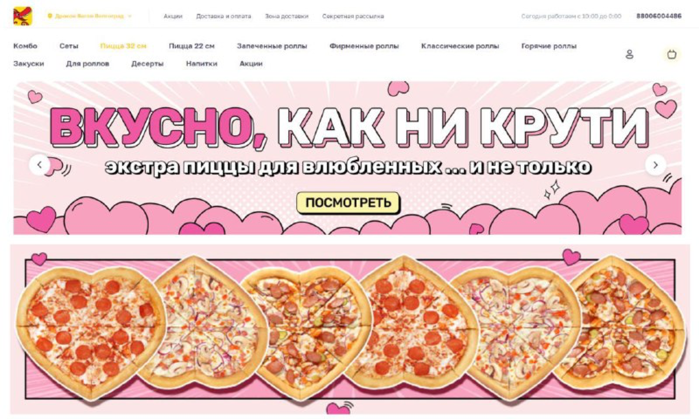

Как превратить пиццу-сердце в «пиццу-жопу» и заработать на бунтарях 14 февраля
Инструменты и каналы
Photoshop, VK Ads, городские паблики (посевы), Telegram-боты, Senler, CRM-рассылки, мобильные пуши
Результат в цифрах
- Разница в продажах
- +180 шт.
- «Жоп» продали больше, чем классических сердец
- Затраты на производство
- 0 ₽
- 0 новых ТТК, 0 фотосессий — фото перевернули в Photoshop
- Наценка за бунт
- +15 ₽
- Пицца-жопа стоила дороже сердца — наценка за позицию
- Прирост базы без бюджета
- +500 чел.
- +300 в Telegram-канал, +200 в группу ВК

1. Контекст: когда романтика всех достала
Февраль 2023 года. «Дракон Вагон» — быстрорастущая доставка еды в Волгограде в формате дарк-китчен. Бренд изначально позиционировался дерзким, ироничным и живым, без пластмассовой корпоративной вежливости.
14 февраля — традиционно золотой день для общепита: огромные средние чеки, аврал на кухне, пиковые продажи. Но в феврале 2023 года в обществе отчётливо ощущалась усталость и глухой бунт против «заморских попсовых праздников». Люди в соцсетях открыто писали: «Опять эти розовые сопли», «Кто вообще это празднует?», «Достали валентинки».
В это время все конкуренты синхронно запустили под копирку одно и то же: сеты «для двоих», комбо со скидкой и пиццы в форме сердца. Рынок превратился в однородную розовую массу. Никто не разговаривал со скептиками.
2. Задача: забрать кассу тех, кто презирает 14 февраля
Аудитория разделилась на два лагеря:
- Романтики: классические клиенты, которые заказывают пиццу-сердце для свидания дома. Терять их нельзя.
- Циники, бунтари и одиночки: видят в празднике навязанную коммерцию. Их боль — чувство, что маркетинг их игнорирует. Их желание — чтобы их иронию и протест хоть кто-то признал.
Цель: максимизировать выручку праздничного дня за счёт работы с обеими группами и показать, что «Дракон Вагон» понимает настроение горожан лучше стерильных сетевиков.
3. Решение за 5 минут с нулевой себестоимостью
Большинство спецпроектов умирают из-за долгого согласования: придумать новое тесто, составить ТТК (технологическую карту), закупить ингредиенты, обучить пиццамейкеров на 5 цехах, провести студийную фотосессию. Всё это стоит денег и отнимает недели.
Мы пошли другим путём — применили Growth Hacking подход:
Слоган-мост
«Вкусно, как ни крути» — примиряет обе стороны и снимает градус ханжества.
Photoshop вместо кухни
Взяли снимок пиццы-сердца и повернули на 180°. Получилась «пицца-жопа». 0 ₽ затрат.
Наценка за бунт
Пиццу-жопу сделали на 15 ₽ дороже. Хочешь бунтовать — плати за позицию.
Для кухни процесс не изменился вообще: повара раскатывали и выпекали одну и ту же форму. Разница была только в коробке, позиционировании на сайте и названии чека.
4. Дистрибуция: локальный хайп без цензуры
- Прогрев за 7 дней: дразнящие посты в соцсетях с намёком на неоднозначный сюрприз к празднику, таргет на широкую городскую аудиторию, email-рассылки.
- 14 февраля — взрыв в инфополе: синхронные посевы во всех крупнейших пабликах Волгограда («Подслушано», городские мем-каналы, районные сообщества).
- Активация базы: триггерные рассылки в Senler, интерактивный Telegram-бот, где пользователи могли выбрать сторону (Сердце vs Жопа), и push-уведомления в приложении.
В комментариях вспыхнула жаркая дискуссия: от моралистов с осуждением до сотен восторженных репостов. Главное — механика вовлекла людей в спор, а в споре каждый второй кликал на сайт и оформлял заказ.
5. Результаты: сколько принесла «пицца-жопа»
- Продажи: перевёрнутых пицц («жоп») суммарно заказали на ~180 штук больше, чем стандартных пицц-сердец. Циничная аудитория оказалась не просто громкой в комментариях, но и самой платящей.
- Экономика: благодаря наценке в 15 ₽ и нулевым инвестициям в производство спецпроект дал максимальную маржинальность среди всех праздничных промо года.
- Органический прирост: +300 целевых подписчиков в Telegram-канал и +200 человек в сообщество ВКонтакте, которые остались и продолжили заказывать в обычные дни.
- Укрепление бренда: лоукост-доставка доказала, что понимает свою аудиторию, не боится самоиронии и умеет делать весело без многомиллионных медиабюджетов.
Главный вывод
Когда все конкуренты бегут за мейнстримом, на контр-тренде всегда лежит никем не занятая прибыль. Не нужно бояться скептиков и хейтеров инфоповода — если дать им легальный, ироничный способ выразить свой протест, они купят охотнее и заплатят больше.